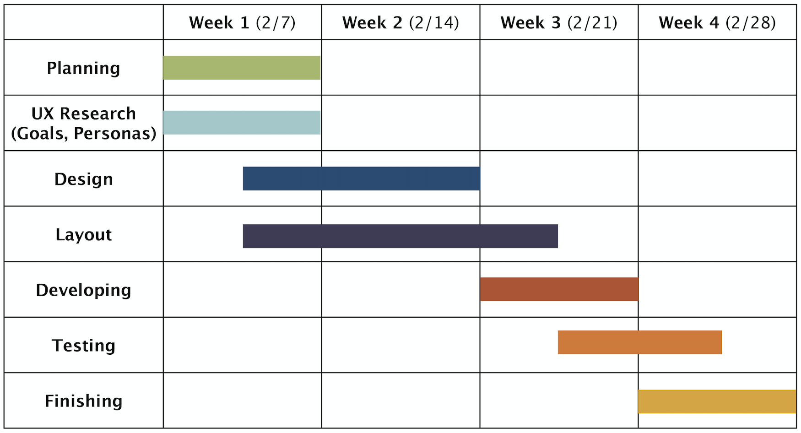

Within this personal portfolio, I aim to find a cohesive brand for all that I am and all that I do within design, dance, and choreography. I want to tell a story of who I am, and create an experiential journey for my audience to discover this story. I plan to design this portfolio using Web Flow, WordPress, or another web-developing site.
My overall goal is to show what skills I would bring to their company, whether that be through design, performance, or choreography. With this portfolio, I aim to find my own brand that authentically and cohesively speaks to who I am as a designer, dancer, choreographer, and individual.
Another goal that I have is making the information about myself accessible to my audience which includes all different types of users. A question to consider throughout this process is, how can I ensure that my portfolio feels genuine and authentic to myself while also considering that my users have different needs when accessing online content. Some features to consider are night mode, lessened motion with animations, alt text added to all images, and allowing users to enlarge font sizes.
My primary audience includes two types of employers: both dance and design professionals who are seeking a UX/UI designer and/or dancer and choreographer for either design or dance projects. In some instances, the audience might include a dance company or studio that requires design work in the form of promotional materials or website design. My secondary audience includes both my peers that exist in both worlds of design and dance as well as friends and family.
